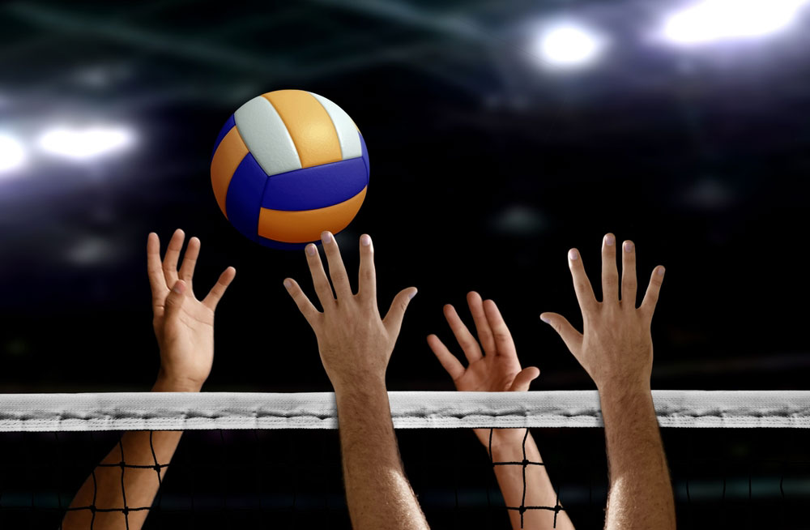
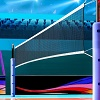
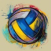
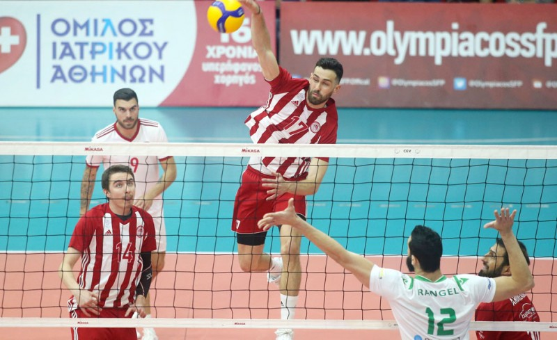

Βόλεϊ
Η πετοσφαίριση (κυπριακή διάλεκτος: πετόσφαιρα, αγγλικά: volleyball) είναι ένα ομαδικό ολυμπιακό άθλημα, το οποίο παίζεται από ανδρικές και γυναικείες ομάδες των έξι ατομων. Η πετοσφαίριση επινοήθηκε το 1895 από τον Αμερικανό καθηγητή Γουίλιαμ Μόργκαν, που εργαζόταν στο παράρτημα της ΧΑΝ (YMCA) του Χόουλιοκ, στην πολιτεία Μασαχουσέτη των ΗΠΑ. Προσπαθώντας να δημιουργήσει ένα ομαδικό παιχνίδι κλειστού χώρου, χωρίς τον κίνδυνο τραυματισμών, επινόησε το βόλεϊ. Αρχικά ονόμασε το παιχνίδι μιντονέτ. Το όνομα βόλεϊ δόθηκε λίγο αργότερα, έπειτα από έναν αγώνα επίδειξης, μάλλον από τον Άλφρεντ Χάλστιντ.
| No | Κανονισμός | Ορισμός | Εξοπλισμός |
|---|---|---|---|
| 1 | Αριθμός και θέσεις παικτών: | 6 παίκτες - Επιθετική ζώνη (μπροστά: αριστερά, κέντρο, δεξιά), Αμυντική ζώνη (πίσω: αριστερά, κέντρο, δεξιά). |  |
| 2 | Δίχτυ(Φιλέ): | Θέση: πάνω από την κεντρική γραμμή, μήκος: 9,5 μ., πλάτος: 1μ., ύψος: 2,43 για τους άνδρες και 2,24 για τις γυναίκες. | |
| 3 | Διάρκεια αγώνα και αριθμός σετ: | Δεν υπάρχει προκαθορισμένη διάρκεια/αριθμός σετ. Νικητής είναι αυτός που θα κερδίσει 3 σετ(πρώτος στους 25 πόντους). |  |
| 4 | Χρόνος κατοχής μπάλας: | 8'' (δευτερόλεπτα) |

Το νέο άθλημα διαδόθηκε πολύ γρήγορα, κυρίως μέσω των παραρτημάτων της Χ.Α.Ν. στις πολιτείες των ΗΠΑ και σε όλο τον κόσμο. Στην Ευρώπη μεταφέρθηκε κατά τη διάρκεια του Α΄ παγκοσμίου πολέμου από τους Αμερικανούς στρατιώτες. Αρχικά παιζόταν με διάφορες μπάλες. Το 1900 κατασκευάστηκε η πρώτη ειδική μπάλα βόλεϊ. Το 1947 ιδρύθηκε η Διεθνής Ομοσπονδία Πετοσφαίρισης (Fédération Internationale de Volleyball ή FIVB) στο Παρίσι, η οποία διαμόρφωσε ενιαίους διεθνείς κανονισμούς. Το 1963 ιδρύθηκε και Ευρωπαϊκή Συνομοσπονδία Πετοσφαίρισης (Confédération Européenne de Volleyball ή CEV). Το 1964 αποτέλεσε σημαντική χρονιά για το βόλεϊ, αφού εντάχθηκε στο πρόγραμμα της Ολυμπιάδας του Τόκιο, τόσο για τους άνδρες όσο και για τις γυναίκες. Η "Εθνική ομάδα πετοσφαίρισης Ελλάδος ανδρών" (εναλλακτικά: Εθνική βόλεϊ ανδρών), είναι το αντιπροσωπευτικό συγκρότημα της Ελλάδας σε διεθνείς διοργανώσεις όπως οι Ολυμπιακοί Αγώνες, το Παγκόσμιο Πρωτάθλημα, το Ευρωπαϊκό πρωτάθλημα, η Παγκόσμια Λίγκα, η Ευρωπαϊκή Λίγκα, οι Μεσογειακοί Αγώνες και άλλες τυχόν διεθνείς διοργανώσεις. Σήμερα, μετρά αρκετές διεθνείς επιτυχίες σε όλα τα τμήματα.
Ακολουθούν οι διεθνείς επιτυχίες της Εθνικής Ελλάδος Βόλεϊ:
- Τρίτη η Εθνική εφήβων στο Λούκοβιτ (1971)
- Τρίτη η Εθνική ανδρών στους Μεσογειακούς της Σμύρνης (1971)
- Πέμπτη η Εθνική ανδρών στο Κύπελλο Άνοιξης (1972)
- Πρώτη η Εθνική ΕΔ στο CISMS στη Θεσσαλονίκη (1973)
- Πρώτη στο Κύπελλο Ανοίξεως το (1980)
- Πρώτη στο Βαλκανικό(1980)
Στην Ελλάδα η πετοσφαίριση εισήχθη το 1922 από τον Πανιώνιο και τη ΧΑΝΘ. Πρώτος διδάξας του βόλεϊ στην Ελλάδα θεωρείται ο γυμναστής Λευκαδίτης του Π.Γ.Σ. Στη συνέχεια διαδόθηκε και σε άλλους συλλόγους με αποτέλεσμα να προκηρυχτούν τα πρώτα πρωταθλήματα 1924-1926 με πρωταθλητή τον Πανιώνιο το 1924, τον Π.Γ.Π το 1925 και τα Διδασκαλία το 1926. Το 1929-1932 δημιουργήθηκαν ομάδες βόλεϊ όπως η Νήαρ Ηστ, το Πανεπιστήμιο Αθηνών, ο Ιωνικός, ο Πειραϊκός, ο ΠΟΠ, και η ΕΑΠ Πατρών. Ακολούθησε η δεκαετία 1930-1940 με τη μεγαλύτερη διάδοση του αθλήματος που ανακόπηκε από τον Β΄ Παγκόσμιο Πόλεμο και στη συνέχεια τον εμφύλιο. Το 1950-60 εμφανίστηκε πάλι το βόλεϊ με ελάχιστα τοπικά πρωταθλήματα. Το 1961 διοργανώνεται το πρώτο Πανελλήνιο πρωτάθλημα με πρωταθλητή τον ΠΓΣ. Το 1965 ιδρύεται από τον ΣΕΓΑΣ η Ελληνική Ομοσπονδία Αθλοπαιδιών (ΕΟΑΠ μπάσκετ- β.μ-χόκεϊ) και ακολουθεί μια στάσιμη περίοδος μέχρι το 1967. Το 1968 αρχίζει μια συστηματική προσπάθεια ανάπτυξης του βόλεϊ από την ΕΟΑΠ και τον διορισθέντα Κυβερνητικό Επίτροπο (ΚΕ) σύνδεσμος της ΓΓΑ με την ΕΟΑΠ Θεόδωρο Ανδρεάκο δ/ρα μηχανικό, πρωταθλητή του βόλεϊ του ΠΓΣ, μέλους της ΕΟΑΠ και του ΑΣΑΕΔ (Αθλητισμού ΕΔ).Το 1969 καθιερώνεται για πρώτη φορά πρωτάθλημα εθνικής κατηγορίας και προσλαμβάνεται ο παγκοσμίου φήμης τεχνικός Ρουμάνος προπονητής Stefan Roman θεμελιωτής της τεχνικής του βόλεϊ στην Ελλάδα και δημιουργούνται μόνιμα κλιμάκια με την Εθνική ομάδα να μετέχει στο κύπελλο Δυτικών χωρών για πρώτη φορά. Το 1970 αποτελεί το σημαντικότερο σταθμό για το ελληνικό βόλεϊ. Επιδεινώνονται οι προσπάθειες του ΚΕ Θεόδωρου Ανδρεάκου για τον διαχωρισμό του βόλεϊ από το μπάσκετ σε ανεξάρτητες Ομοσπονδίες ΕΟΠΕ (Πετοσφαίρισης ) και ΕΟΚ ( Καλαθοσφαίρισης). Καθιερώνονται και τελούνται στην Αθήνα οι πρώτοι Βαλκανικοί αγώνες με πρωτοφανή κοσμοσυρροή για το άθλημα. Εκπονείται από τον Θ. Ανδρεάκο και εγκρίνεται από το ΓΓΑ Κ. Ασλανίδη και μπαίνει σε εφαρμογή από την ΕΟΠΕ πενταετές σχέδιο ανάπτυξης του βόλεϊ. Καθιερώνονται αθλητικά κίνητρα ( εισαγωγή διεθνών αθλητών στα ΑΕΙ), υποτροφίες στα μέλη των εθνικών ομάδων , ιδρύονται τοπικές επιτροπές β.μ στην επαρχία, λειτουργεί σχολή προπονητών,κατασκευάζονται τα πρώτα κλειστά γήπεδα από τη ΓΓΑ και γενικά μπαίνουν τα θεμέλια της σε βάθος διάδοσης του β.μ.